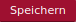

Eigene Bezeichnungen
In xmera Omnia können systemseitige Bezeichnungen in verschiedenen Sprachen angezeigt werden. Der Administrator hat aber auch die Möglichkeit die Wahl der Sprache für den Benutzer zu unterbinden, in dem er eine Standardsprache verbindlich festlegt.
xmera Omnia ist in Deutsch und Englisch übersetzt. In den anderen Sprachen werden nicht übersetzte Bezeichnungen automatisch in Englisch angezeigt.
Die Systembezeichnungen können an ISMS-Begriffe des Unternehmens angepasst werden. Über den Menüpunkt Eigene Bezeichnungen im Administrationsmenü wird die Liste der angepassten Bezeichnungen angezeigt.
In dieser Liste werden alle Bezeichnungen angezeigt, die durch die Vorkonfiguration oder den Administrator angepasst wurden. Diese Änderungen werden in einer YAML-Datei gespeichert und überschreiben die Standardwerte.
Darstellung und Anzeigemöglichkeiten
Die Bearbeitung der eigenen Bezeichnungen kann über Einträge im Normalen Modus als Bezeichungsfeldliste
oder im YAML Modus
erfolgen.
Weiter besteht die Möglichkeit die eigenen Anpassungen über folgenden Button zu deaktivieren: . Zurück geht es durch Klick auf .
Die Standardbezeichnungen können mit Klick auf den Button in einem separaten Fenster angezeigt werden.
Entsprechend der Sprachauswahl wird die Liste der angepassten Bezeichnungen angezeigt.
Bezeichnungen suchen und ändern
Grundlage für die Änderung einer Bezeichnung ist das Keywort der Bezeichnung. In der YAML-Sprachdatei wird jedem Keywort ein Text zugeordnet, der dann dem Benutzer angezeigt wird.
Dieser Text kann mit Hilfe einer gesonderten YAML-Änderungsdatei angepasst werden. Diese Datei wird im Normalmodus für den Administrator in einer Listendarstellung aufbereitet. Im YAML-Modus kann der Administrator in einem Editor die Anpassungen direkt in der YAML-Datei durchführen.
Im Normalmodus
Der Normalmodus bietet eine Suchfunktion, in der nach dem Keywort oder auch der Bezeichnung gesucht werden kann.
In die Suchzeile kann der Suchbegriff eingegeben werden. Sofort werden alle Keywort-Bezeichnung-Paare angezeigt, die den Suchbegriff beinhalten.
Die grau hinterlegten Wertepaare wurden bereits bearbeitet. Daher können sie nicht ausgewählt werden. Stattdessen können diese Wertepaare direkt in der Liste geändert werden. Durch Klick auf den Button  wird die Änderung übernommen.
Ist das Feld weiß hinterlegt, so kann die Bezeichnung mit Klick auf das Wertepaar geändert werden. Mit Klick auf den Button wird die Änderung übernommen.
Eine geänderte Bezeichnung kann durch Klick auf das Symbol  aus der Liste gelöscht werden. Das Löschen der Bezeichnung wird nach dem Speichern der Änderung (Klick auf unterhalb der Liste) übernommen.
aus der Liste gelöscht werden. Das Löschen der Bezeichnung wird nach dem Speichern der Änderung (Klick auf unterhalb der Liste) übernommen.
In der YAML-Datei
Im YAML-Modus ist keine Suchfunktion vorhanden. Das Keywort muss daher in den Standardbezeichnungen gesucht werden. Hierzu kann über den Button ein Fenster mit dem Inhalt der Standardbezeichnungen geöffnet werden.
In diesem Fenster kann über die Standard-Browser-Suche (Strg-F) nach der Keywort-Bezeichungskombination gesucht werden.
Das Keywort in dem Beispiel oben kann dann verwendet werden, um einen Alternativtext in der YAML-Datei anzulegen. Mit dem Eintrag
de: button_apply: Alternativtext
in das Editorfenster und anschließendem wird der Text bei Sprachauswahl Deutsch von Anwenden auf Alternativtext geändert.